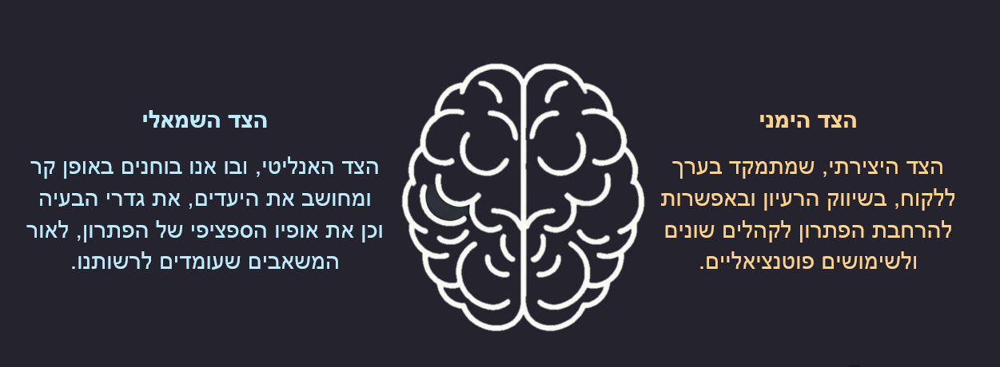

"מודלים עסקיים הופכים לפגי תוקף, במהירות של יוגורט במקרר" - אלכסנדר אוסטרוולדר, ממציא מודל הקנבס.
מודל הקנבס- הגיליון, הוא מודל עסקי לחברות ולמיזמי הזנק, שמאפשר למשתמשים בו "להוריד את הרעיונות הגדולים" שבראשם של היזמים אל המציאות. ובמילים אחרות, להפוך רעיון שאפתני לפיתרון בר-קיימא.
היזם נדרש לעבוד על "קנבס" - גיליון גדול, שמחולק למספר קטגוריות ותחומים, שמשקפים כל אחד שאלות אינטואיטיביות שבכוחן לסייע ליזם להציב המסד ולשרטט את אבני-הדרך של המודל העסקי העתידי שלו. עוצמתו ויתרונו של המודל נשענים על התשובות שיזמים נותנים לסדרת השאלות.
יזמים שעושים שימוש בקנבס מתבקשים להשיב על השאלות באופן חד, ולהיות ערים לספקות ולקשיים בתשובותיהם. אם יש ליזם ספק בכך שתשובתו אכן נותנת מענה מספק לבעיה או לצורך שבפנים - עליו לשקול מחדש את הרעיון. לאורך חיי הפיתוח החדשני, נכון לבחון בכל שלב, וכן אחת לתקופה, את תקפות התשובות ששורטטו על-גבי הקנבס.
במובן זה, תהליך השימוש בקנבס קצר, פשוט וברור מאוד - אך מחייב הפגנת עירנות, כנות ומוכנות לבחון הנחות-יסוד מחדש, לכל אורכם של חיי המיזם - מפיתוח ועד גריטה.
הרציונאל שמאחורי המודל
הקנבס הוא יריית הפתיחה להתממשותו של הרעיון החדשני. הוא נועד לשימוש גם ברגעי "הברקה מחשבתית", בהליכה ברחוב, באמצע ארוחה, רגע לפני שעת השינה. אלו אותם רגעים שבהם מתקבלת החלטה או מתגבשת תובנה חשובה לגבי יזום הפרויקט.
באותם רגעים" ,הכל מסתדר" - ולפעמים יותר מדי. כדי לתמוך את התובנות ולספק להן בסיס איתן, הקנבס מזכיר לנו, לדוגמה, את היבטי התקציב, קהל-היעד והחסמים, ומאפשר לנו להציב אלו מול אלו את האלמנטים "שמקרקעים את הרעיון" וכן את האלמנטים "שמאפשרים לרעיון להמריא".
כלל רכיבי הקנבס נתונים לשינוי ולעדכון לאורך הדרך; הוא נושם, משתנה וגמיש.
מבנה הקנבס
האונה הימנית והאונה השמאלית
הקנבס מחולק לשני צדדים - ימין ושמאל, בצורה שמזכירה את חלוקת אונות המוח האנושי:

הצד הימני - הצד היצירתי, שמתמקד בערך ללקוח, בשיווק הרעיון ובאפשרות להרחבת הפיתרון לקהלים שונים ולשימושים פוטנציאליים.
הצד השמאלי - הצד האנליטי, ובו אנו בוחנים באופן קר ומחושב את היעדים, את גדרי הבעיה וכן את אופיו הספציפי של הפיתרון, לאור המשאבים שעומדים לרשותנו.
הקנבס מאורגן לפי סדר המילוי המומלץ- מהבנת הסביבה וקהלי היעד, השוק, אל ניסוח הרעיון ולבסוף בשלבי ההטמעה והחסמים הפוטנציאליים.
בלחיצה הורידו את מודל הקנבס למילוי ידני
{kind=link}
בהצלחה בתכנון הפתרון שלכם!